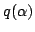

Usage
norm q
trace q
norm P
trace P
norm(P)(p)
trace(P)(p)
Signatures
norm,trace: % R
norm,trace: (P:UnivariatePolynomialCategory %)
| Parameter | Type | Description |
|---|---|---|
| q | % | An element of the algebraic extension |
| P | UnivariatePolynomialCategory % | A polynomial type |
| p | P | A polynomial |
Description
norm() and trace() return respectively the product and sum of the over all the roots of the polynomial defining the extension, while norm(P)() and trace(P)(